まもなく始まります
時給2万円を実現するAIライティング
BGM：魔王魂
講師
岡崎かつひろ
全国出版オーディション主宰／ブックライター
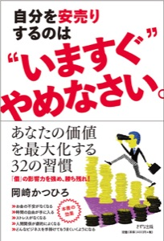
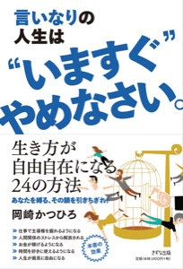
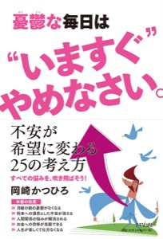
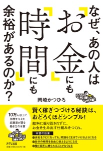
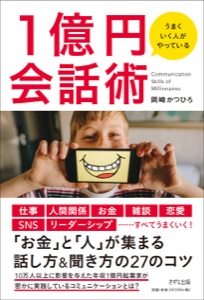
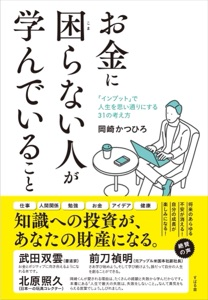
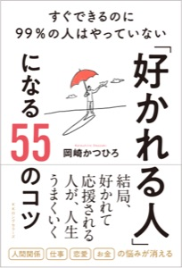
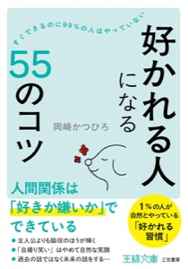
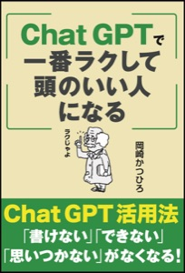
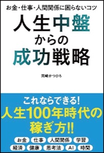
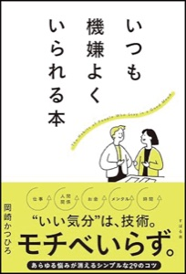
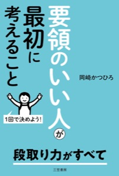
主催
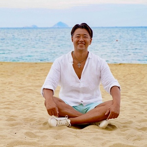
田中克成たなかつ
ギバーズマーケティング・コンサルタント
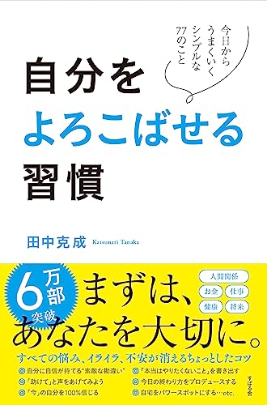
はじめに、本音を
実は、ライターの仕事は
やりたくなかった
理由は、
割に合わなかったから
昔のライターの仕事
どんなに早くても
200時間以上
1冊あたり
ライターの相場
50万円
＋ 印税2%（あるかないか）
重版がかかる本は
少ない
＝ ほぼ50万円の売り切り
50万円 ÷ 200時間 ＝
時給2,500円
1冊を責任を持って仕上げて
この金額。
それが、今は
AIで、何が変わったか
変化 01
取材はZoomで。
終わった瞬間、
文字起こしも完了
変化 02
誤字脱字は
AIがきれいに直す
変化 03
構成案に沿った
情報のまとめは
AIがいちばん早い
ただし
文章をまるごと
AIに書かせるのは
とても危ない
実際の画面で
AIライティングの流れ
画面デモ（見せる内容は要確認）
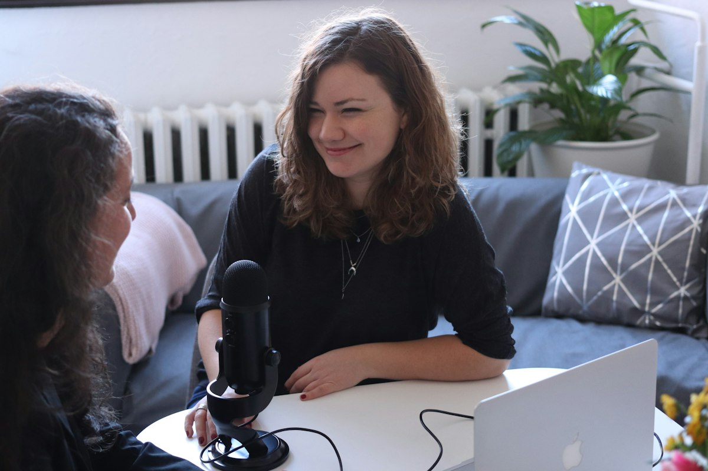
岡崎の場合
取材 2時間 × 5回
10時間
＋ ライティング 約10時間
合計
約20時間
50万円 ÷ 20時間 ＝
時給2万5,000円
さらに、印税が乗ったら
仮に10万部 × 約30円
300万円
（50万円 ＋ 300万円）÷ 20時間 ＝
時給17万5,000円
※10万部売れた場合の仮の計算です
確実に稼げて、
夢もある
ライターは、いまいちばんおいしい仕事のひとつ
でも、
本当の鍵はAIじゃなかった
AIの使い方は、
実はそんなに難しくない
いちばん大事なのは
取材の仕方
いい取材ができれば、
時給2万円は実現できる
いい取材の
ポイント 1
結論 › 根拠 › 具体例
ポイント 2
数字・エピソード・出来事
ポイント 3
いまのビジネス書は
根拠を求められる
では、取材はどう身につける？
いちばんの方法は
実際の取材を
見ること
ご案内
『自分をよろこばせる習慣2』（仮）
取材を見るだけで、田中さんのコンテンツの中身まで知ることになる
田中さんは、
普通の著者より取材の回数が多い
＝ そのぶん、学べる量も多い
時給2万円のAIライティング
＝ ブックライターの技術
＝ 取材を見るのが近道
取材同席のご案内
参加費・回数・お申し込み方法
中身が決まりしだい入れます
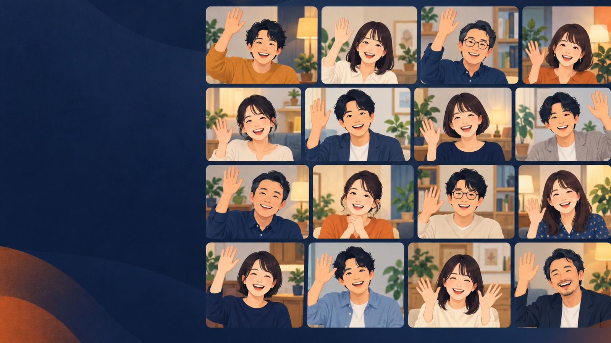
質疑応答
ありがとうございました
主催：田中克成 講師：岡崎かつひろ